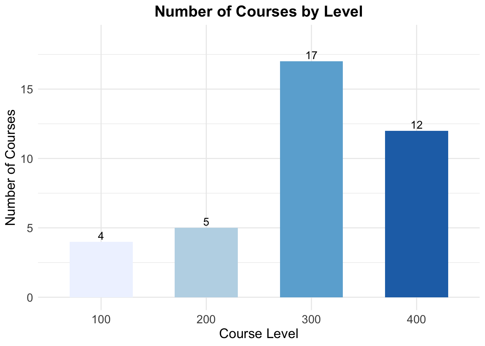

[1] "ENVS 101. Introduction to Environmental Studies I. 3 Hours."
[2] "Semester course; 3 lecture hours. 3 credits. Enrollment is restricted to"
[3] "environmental studies majors. Study of contemporary issues related to"
[4] "environmental studies including sustainability, biological conservation,"
[5] "global change and an overview of the core earth systems."
[6] "ENVS 102. Introduction to Environmental Studies II. 3 Hours."
[7] "Semester course; 3 lecture hours. 3 credits. Prerequisite: ENVS 101 or"
[8] "permission of instructor. Enrollment is restricted to environmental studies"
[9] "majors. Studies of contemporary issues related to government policy and"
[10] "environmental issues at local to international scales."
[11] "886 Undergraduate courses"
[12] "ENVS 105. Physical Geology. 3 Hours."
[13] "Semester course; 3 lecture hours. 3 credits. A descriptive approach to"
[14] "physical geology dealing with the history and structure of the earth,"
[15] "catastrophic events and geology as it relates to the contemporary"
[16] "environment. An optional laboratory, ENVZ 105, may be taken with this"
[17] "course."
[18] "ENVS 201. Earth System Science. 3 Hours."
[19] "Semester course; 3 lecture hours. 3 credits. An introduction to the"
[20] "processes of and linkages among the major systems that drive planet"
[21] "Earth. The biosphere, geosphere, hydrosphere, atmosphere and"
[22] "sociosphere are presented as dynamic and interdependent systems."
[23] "ENVS 222. Electronic Portfolios. 1 Hour."
[24] "Semester course; 1 lecture hour (delivered online). 1 credit. This online"
[25] "course will guide individuals in developing an electronic portfolio"
Data Exploration
# Creating an index based on the detection of "ENVS"str_detect(envs, "ENVS") -> idxenvs[idx]
[1] "ENVS 101. Introduction to Environmental Studies I. 3 Hours."
[2] "ENVS 102. Introduction to Environmental Studies II. 3 Hours."
[3] "Semester course; 3 lecture hours. 3 credits. Prerequisite: ENVS 101 or"
[4] "ENVS 105. Physical Geology. 3 Hours."
[5] "ENVS 201. Earth System Science. 3 Hours."
[6] "ENVS 222. Electronic Portfolios. 1 Hour."
[7] "ENVS 260. Outdoor Leadership. 3 Hours."
[8] "ENVS 265. Paths to Environmental Leadership. 2 Hours."
[9] "Semester course; 2 lecture hours. 2 credits. Prerequisites: ENVS 101"
[10] "and ENVS 102, both with a minimum grade of B. This course focuses"
[11] "ENVS 291. Special Topics in Environmental Studies. 1-4 Hours."
[12] "ENVS 300. Sustainable Societies: James River Basin. 3 Hours."
[13] "ENVS 301. Introduction to Meteorology. 3 Hours."
[14] "ENVS 310. Introduction to Oceanography. 3 Hours."
[15] "ENVS 311. Politics of the Environment. 3 Hours."
[16] "ENVS 314. Human-Environment Interactions: Foundations and"
[17] "ENVS 315. Energy and the Environment. 3 Hours."
[18] "ENVS 321. Cartography. 3 Hours."
[19] "ENVS 330. Environmental Pollution. 3 Hours."
[20] "ENVS 332. Environmental Management. 3 Hours."
[21] "ENVS 335. Environmental Geology. 3 Hours."
[22] "Semester course; 3 lecture hours. 3 credits. Prerequisite: ENVS 105"
[23] "ENVS 343. Data Literacy. 4 Hours."
[24] "Semester course; 4 lecture hours. 4 credits. Prerequisites: ENVS 102"
[25] "ENVS 355. Water. 3 Hours."
[26] "ENVS 330 or permission of instructor. The course takes an ecosystem"
[27] "ENVS 360. Outdoor Programming and Event Management. 3 Hours."
[28] "ENVS 361. Outdoor Team Building and Group Facilitation. 3 Hours."
[29] "ENVS 368. Nature Writing. 3 Hours."
[30] "ENVS 370. Applications of Conservation Science. 3 Hours."
[31] "Semester course; 3 lecture hours. 3 credits. Prerequisite: ENVS 343."
[32] "ENVS 391. Special Topics in Environmental Studies. 1-4 Hours."
[33] "ENVS 401. Meteorology and Climatology. 3 Hours."
[34] "ENVS 411. Oceanography. 3 Hours."
[35] "ENVS 421. Environmental Data Visualization. 3 Hours."
[36] "ENVS 430. Invasive Species Management. 3 Hours."
[37] "ENVS 460. Wilderness First Responder. 3 Hours."
[38] "ENVS 461. Wilderness Policy and Practice. 3 Hours."
[39] "ENVS 490. Research Seminar in Environmental Studies. 3 Hours."
[40] "ENVS 491. Topics in Environmental Studies. 1-4 Hours."
[41] "ENVS 492. Independent Study. 1-3 Hours."
[42] "ENVS 493. Environmental Studies Internship. 1-3 Hours."
[43] "ENVS 499. Environmental Studies Capstone Experience. 0 Hours."
[44] "Semester course; variable hours. 0 credits. Corequisite: ENVS 490,"
[45] "ENVS 491 (when topics implement core competencies required for a"
[46] "Environmental Studies), ENVS 492 or ENVS 493. Enrollment restricted to"
[47] "ENVS 105, an optional laboratory course consisting of experiments and"
[48] "activities related to ENVS 105."
[49] "Semester course; 2 laboratory hours. 1 credit. Corequisite: ENVS 335."
[50] "Required for environmental science majors enrolled in ENVS 335; optional"
[51] "Laboratory exercises coordinated with ENVS 335 lectures."
[52] "ENVS 401. A series of laboratory and field experiments designed to"
# Cuts it down a good but...but there are still extra things in the stringlength(envs)
[1] 262
length(envs[idx])
[1] 52
# Narrowing down our search: Pattern Matching -> Identify what we mean when we say we are looking for 4 uppercase letters followed by 3 numbers followed by additional text -> REGULAR EXPRESSIONS
Regular Expressions
envs101 <- envs[1]envs101
[1] "ENVS 101. Introduction to Environmental Studies I. 3 Hours."
data.frame(course = raw[,1],title =str_trim(raw[,2]),hours =str_trim(raw[,3])) %>%mutate(hours =str_remove(hours, " Hours?$")) -> df# Splitting the course to seperate programdf <- df %>%separate(course, into =c("program", "course"), sep =" ")# Making them numeric and making topics 1 creditdf <- df %>%mutate(hours =case_when(str_detect(hours, "-") ~as.numeric(str_extract(hours, "^[0-9]+")),TRUE~as.numeric(hours) ))
Warning: There was 1 warning in `mutate()`.
ℹ In argument: `hours = case_when(...)`.
Caused by warning:
! NAs introduced by coercion
Creating Plot for Classes
df <- df %>%mutate(course =as.numeric(course))# Extract course level by taking the hundreds digit directly from numeric valuesenvs_levels <-as.character(floor(df$course /100) *100)# Convert to a data frame for easier manipulationenvs_levels_df <-tibble(course = df$course, level = envs_levels)# Group by general course level (100, 200, etc.) and count the courses in eachlevel_counts <- envs_levels_df %>%group_by(level) %>%summarise(count =n(), .groups ='drop')# Check if level_counts has dataprint(level_counts)
# Plotting the course levelsggplot(level_counts, aes(x = level, y = count, fill = level)) +geom_bar(stat ="identity", width =0.6) +scale_fill_brewer(palette ="Blues") +theme_minimal() +labs(title ="Number of Courses by Level",x ="Course Level",y ="Number of Courses" ) +theme(plot.title =element_text(hjust =0.5, face ="bold", size =16),axis.title =element_text(size =14),axis.text =element_text(size =12),legend.position ="none" ) +geom_text(aes(label = count), vjust =-0.3, size =4) +expand_limits(y =max(level_counts$count) *1.1)

Word Cloud with full course title
# Create a word frequency tableword_freq <- df %>%count(title, sort =TRUE)wordcloud2(word_freq, size =0.15)
Word Cloud based on word frequency in course titles
# Step 1: Tokenize the words in the course titlesword_freq_2 <- df %>%unnest_tokens(word, title) %>%# Break titles into individual wordscount(word, sort =TRUE) # Count each unique word's occurrence# Step 2: Remove common stop words if desired# You can use the `stop_words` dataset in the `tidytext` package to remove them# install.packages("tidytext") # if you don't have tidytext installedlibrary(tidytext)word_freq_2 <- word_freq_2 %>%anti_join(stop_words, by ="word")# Step 3: Generate the word cloudwordcloud2(word_freq_2, size =1.0)